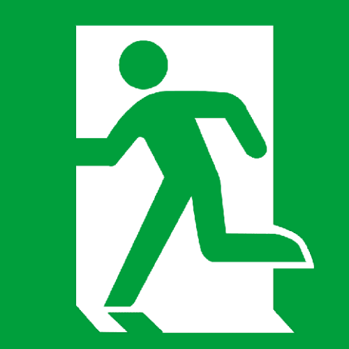

<div (onRefresh)="refreshData()" >
    <div id='task_bar'>

        <button routerLink='/todo-manage'>管理</button>
    </div>
    <table id='to_do_list_table' >
        <thead >
            <tr>
                <th style="width: 30px;"></th>
                <th style="width: 30px;"></th>
                <th style="width: 30px;"></th>
                <th >分类</th>
                <th >内容</th>                          
                <th >类型</th>
                <th >状态</th>
                <th >创建日期</th>
                <th>已耗时</th>
                <th>操作区</th>
            </tr>
        </thead>
        <tbody >
            <tr app-todo-record 
                (onFinish)="setFinishState($event)" 
                (onShowDetail)="showDetail($event)" 
                (onShowComment)="showComment($event)"   
                *ngFor="let d of getToDos(), let i = index"
                [toDo]="d" 
                [index]="i+1" 
                [highlight]="isCurrentProcessing(d)"
                [recordMode]="'edit'">
            </tr>
        </tbody>
    </table>

    <!-- 任务完成结果 -->
    <app-todo-result *ngIf='isResultBoxShow' [toDo]="currentTodo" (onCancelFinishState)="cancelFinishState($event)"></app-todo-result>
    <!-- 任务详情栏-->
    <app-todo-detail *ngIf="isDetailBoxShow" [todo]="currentTodo" (onClose)="cancelShowDetail()"></app-todo-detail>

    <app-todo-comment *ngIf="isCommentBoxShow" [todo]="currentTodo" (onClose)="closeCommentBox()" (onCommit)="invokePauseTodo($event)"></app-todo-comment>
</div>


